토소는 “From roots to small goods”라는 모토 아래, 우리의 뿌리에서 영감을 받아 현대적 소품을 만드는 서울 기반의 디자인 스튜디오입니다. 첫 번째 런칭 제품이자 뮷즈 26년 상반기 공모 당선작인 “갓우산 <I WAS A GAT>”을 시작으로, 현재 다양한 상품을 출시할 예정입니다.
toso.friends@gmail.com (CS/Collaboration) hello@betterlives.kr (B2B/Wholesale)
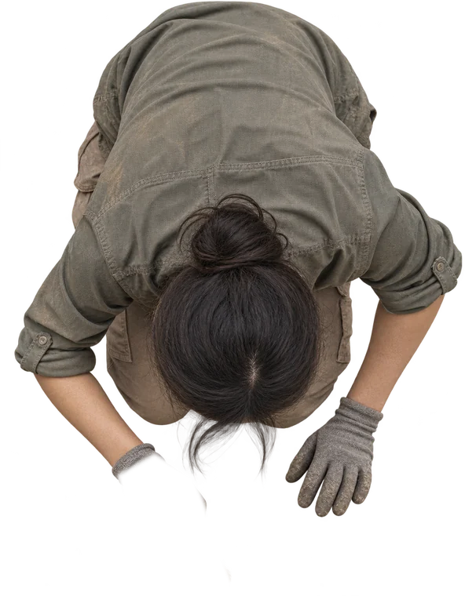
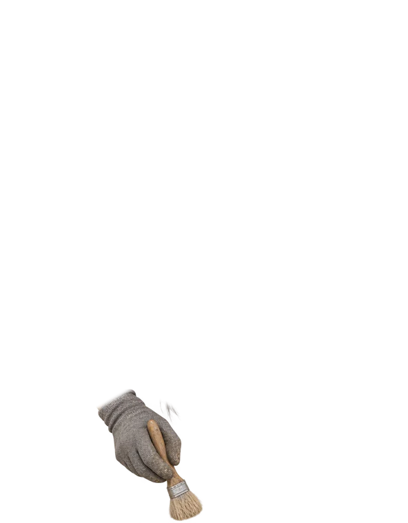
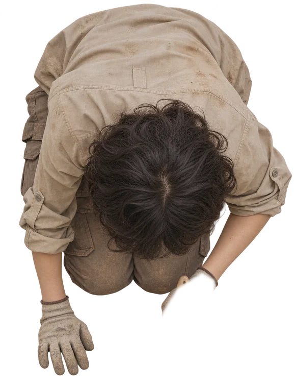
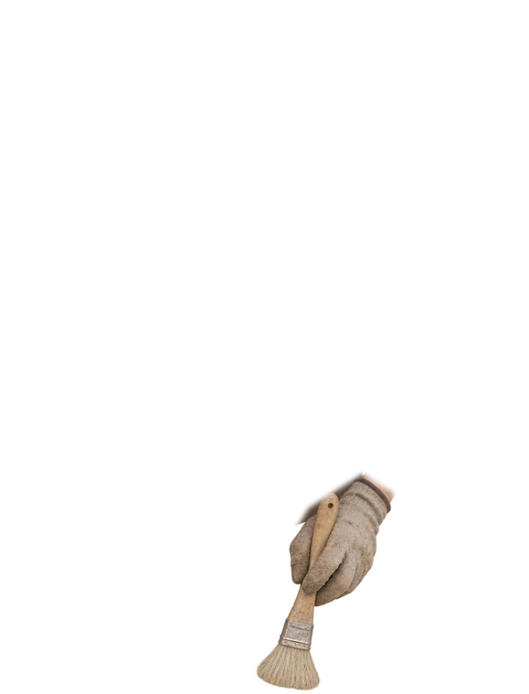
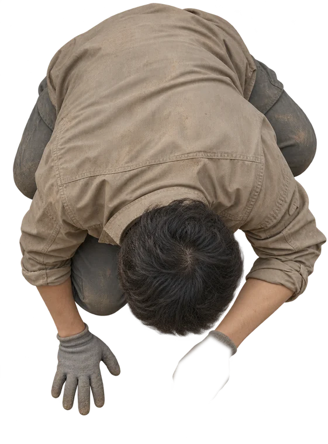
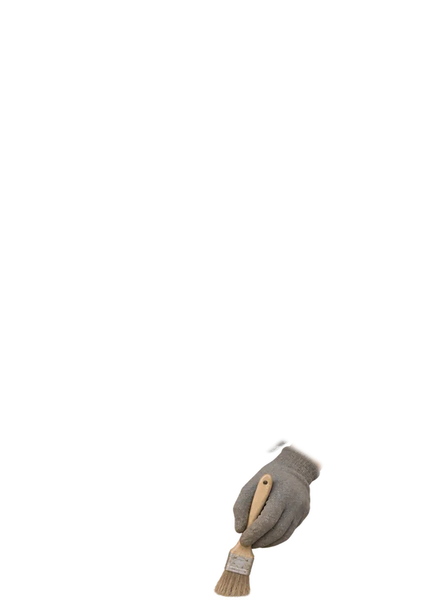
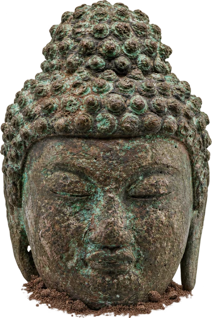
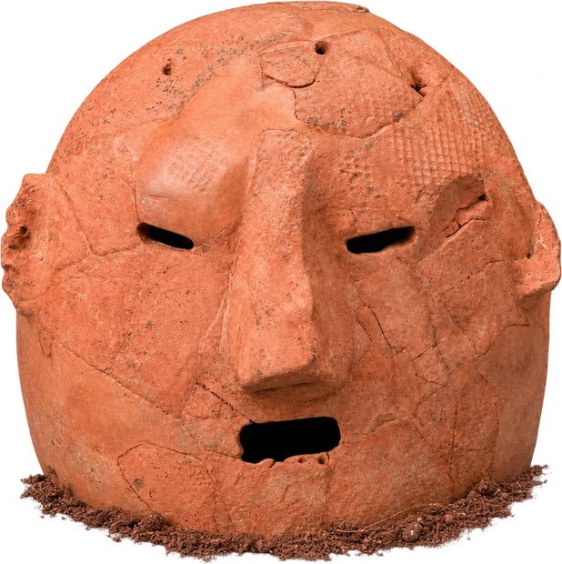
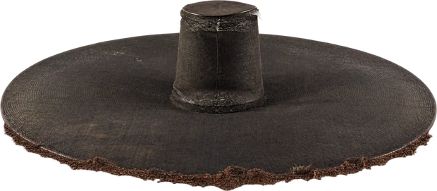
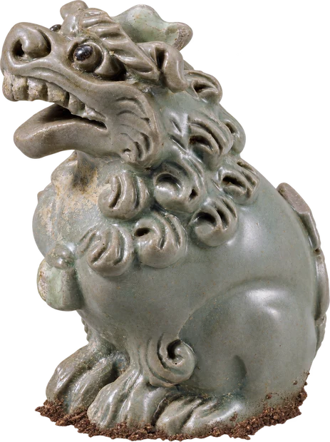
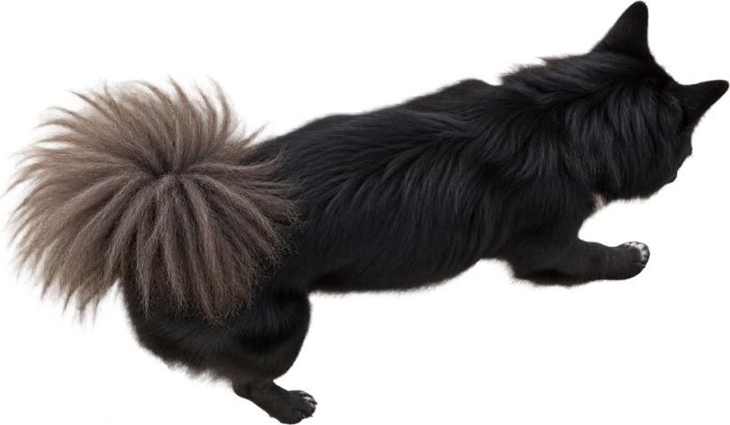